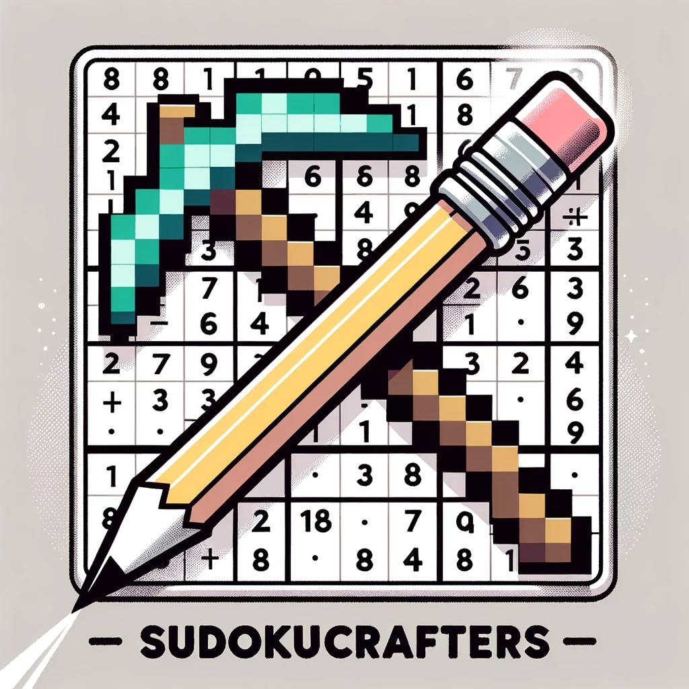

Accueil
Télécharger
A propos
Ressources
Plan de soutenance 1
Plan de soutenance 2
Rapport de soutenance 1
Rapport de soutenance 2
Manuel d'utilisation
Télécharger l'application
A propos de nous
Made With
by SudokuCrafters.